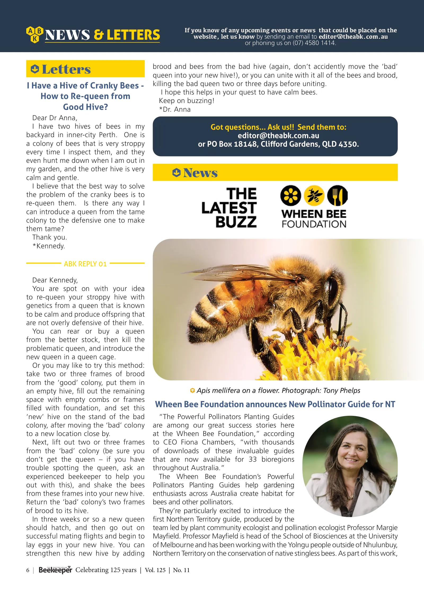

If you know of any upcoming events or news that could be placed on the
website, let us know by sending an email to editor@theabk.com.au
or phoning us on (07) 4580 1414.
NEWS & LETTERS
Got questions... Ask us!! Send them to:
editor@theabk.com.au
or PO Box 18148, Clifford Gardens, QLD 4350.
Letters
News
ABK REPLY 01
I Have a Hive of Cranky Bees -
How to Re-queen from
Good Hive?
Dear Dr Anna,
I have two hives of bees in my
backyard in inner-city Perth. One is
a colony of bees that is very stroppy
every time I inspect them, and they
even hunt me down when I am out in
my garden, and the other hive is very
calm and gentle.
I believe that the best way to solve
the problem of the cranky bees is to
re-queen them. Is there any way I
can introduce a queen from the tame
colony to the defensive one to make
them tame?
Thank you.
*Kennedy.
Dear Kennedy,
You are spot on with your idea
to re-queen your stroppy hive with
genetics from a queen that is known
to be calm and produce offspring that
are not overly defensive of their hive.
You can rear or buy a queen
from the better stock, then kill the
problematic queen, and introduce the
new queen in a queen cage.
Or you may like to try this method:
take two or three frames of brood
from the ‘good’ colony, put them in
an empty hive, fill out the remaining
space with empty combs or frames
filled with foundation, and set this
‘new’ hive on the stand of the bad
colony, after moving the ‘bad’ colony
to a new location close by.
Next, lift out two or three frames
from the ‘bad’ colony (be sure you
don’t get the queen – if you have
trouble spotting the queen, ask an
experienced beekeeper to help you
out with this), and shake the bees
from these frames into your new hive.
Return the ‘bad’ colony’s two frames
of brood to its hive.
In three weeks or so a new queen
should hatch, and then go out on
successful mating flights and begin to
lay eggs in your new hive. You can
strengthen this new hive by adding
Apis mellifera on a flower. Photograph: Tony Phelps
Wheen Bee Foundation announces New Pollinator Guide for NT
“The Powerful Pollinators Planting Guides
are among our great success stories here
at the Wheen Bee Foundation,” according
to CEO Fiona Chambers, “with thousands
of downloads of these invaluable guides
that are now available for 33 bioregions
throughout Australia.”
The Wheen Bee Foundation’s Powerful
Pollinators Planting Guides help gardening
enthusiasts across Australia create habitat for
bees and other pollinators.
They’re particularly excited to introduce the
first Northern Territory guide, produced by the
team led by plant community ecologist and pollination ecologist Professor Margie
Mayfield. Professor Mayfield is head of the School of Biosciences at the University
of Melbourne and has been working with the Yolngu people outside of Nhulunbuy,
Northern Territory on the conservation of native stingless bees. As part of this work,
brood and bees from the bad hive (again, don’t accidently move the ‘bad’
queen into your new hive!), or you can unite with it all of the bees and brood,
killing the bad queen two or three days before uniting.
I hope this helps in your quest to have calm bees.
Keep on buzzing!
*Dr. Anna
6 |
Celebrating 125 years | Vol. 125 | No. 11